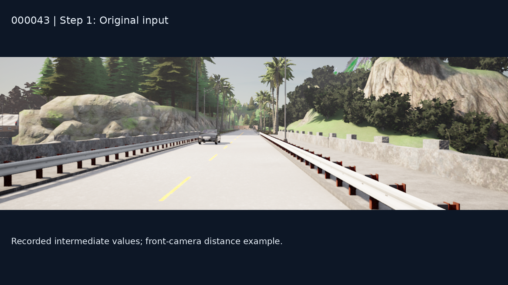
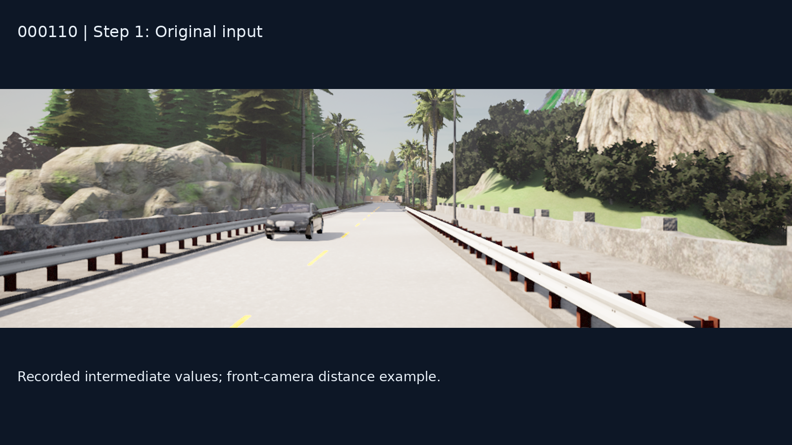
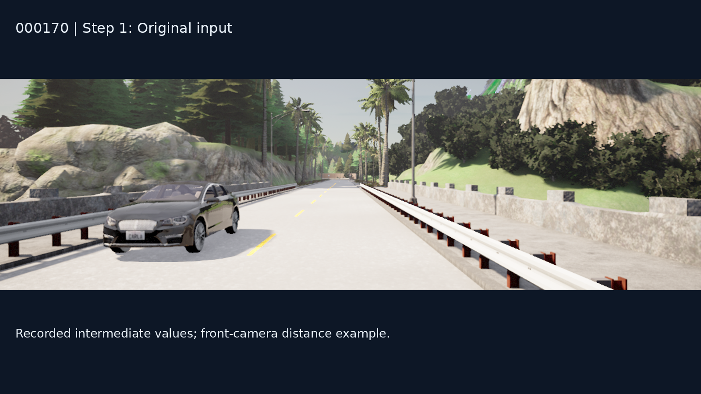
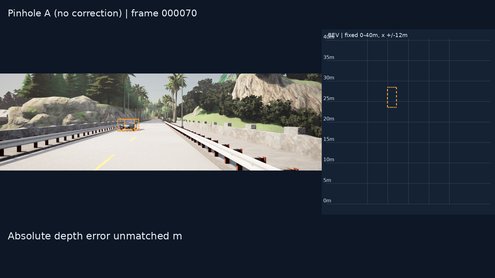
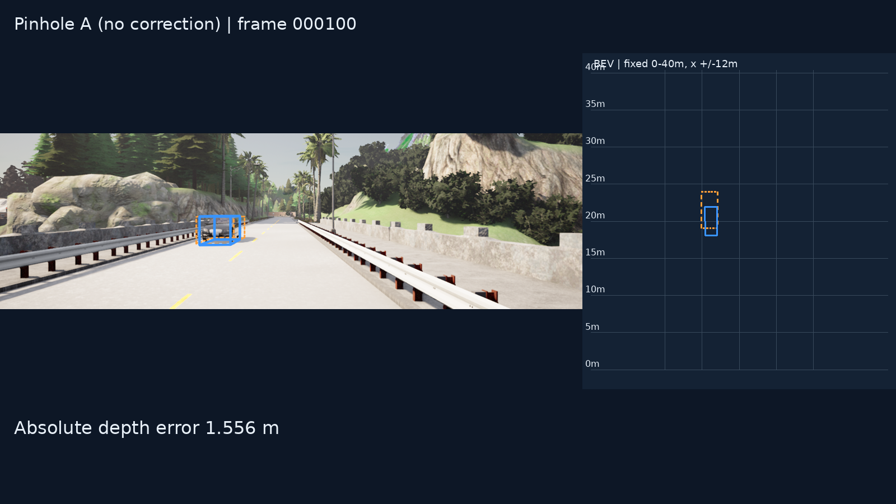
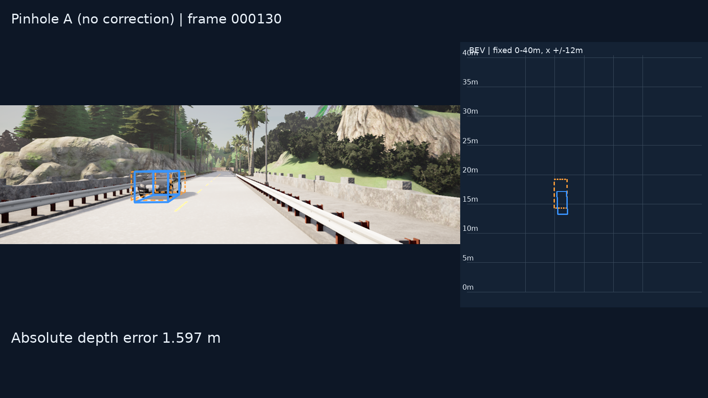
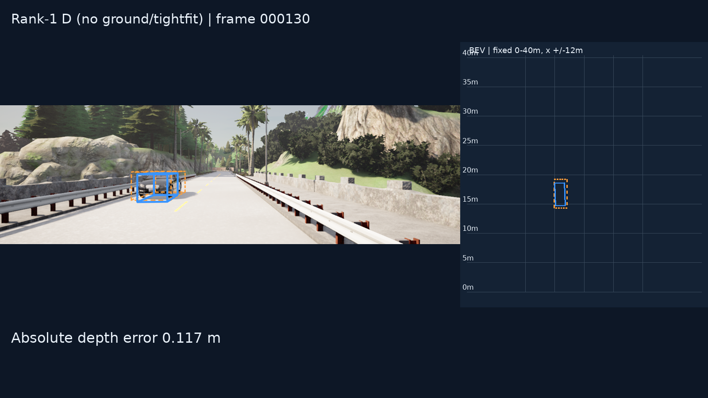
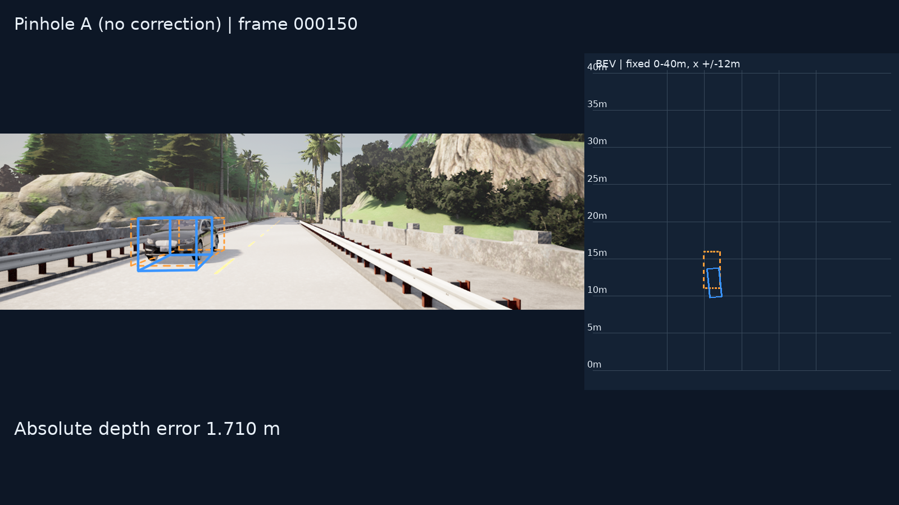
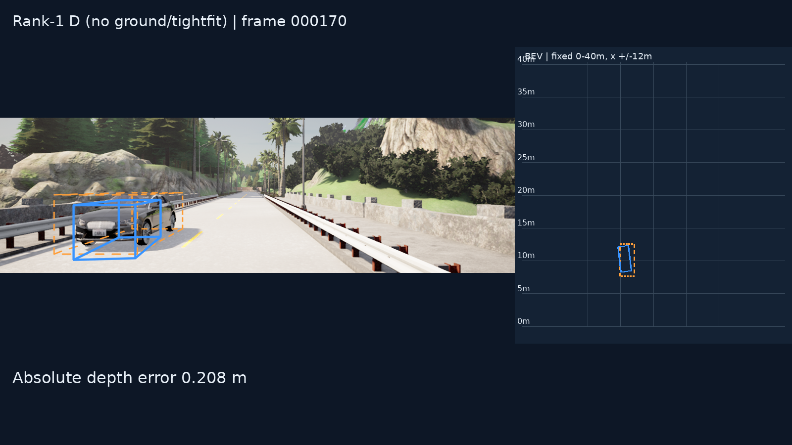
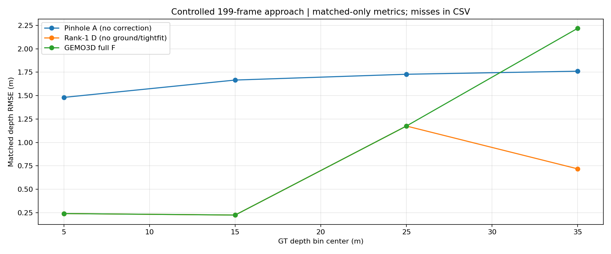

2026-11-18 · 離線交付預覽 · 交接說明 · 整合清單 JSON
30 fps 是影片播放速度。歷史基準設定未核實；四方法預覽不能當公平排行榜。素材依影像 ID 排列，捕捉時間有三處異常。
18 秒 Teaser＋12 秒版；完整 F 的 199 幀、GT、BEV、誤差曲線。
三個既有視角同 ID 配對；缺追車視角，3 處時間／幀號異常，嚴格同步未驗證。
近中遠三張、各七步 PNG＋JSON；目前只有前視，缺斜側；sedan 為強制設定而非分類結果。



四方法前視／BEV 各 18 秒＋12 秒版；歷史基準設定未核實，禁止作公平排行榜。
6 組同尺寸成對 PNG、影片與逐幀 CSV；A→D 只改補償，非完整 F。
000043 · 左補償前／右補償後
000070 · 左補償前／右補償後

000100 · 左補償前／右補償後

000130 · 左補償前／右補償後


000150 · 左補償前／右補償後

000170 · 左補償前／右補償後

7200 筆模型比例網格可供互動圖；缺原始高度資料與 360° 實測掃描。
舊 165 筆來源混不同 GT，不能製成可信排行榜；見 historical_165_audit.md。
深度分箱、逐幀觀測角與誤差 CSV、分析 PNG；缺受控 pitch 敏感度。

100 幀實際計時及同次預測；RTX 3060 共享，89.241ms／11.206fps；影片為離線播放。
15 例失敗圖＋3 張 tightfit 對照。強制 SUV 是人工干預，不是真實分類器誤判。
缺可核實 S1/S2/S4/S5 場景腳本與新捕捉；單一 approach 不冒充四情境。
缺 S3/S6/S7/S8–S10 場景捕捉。
缺路口監控捕捉與數位孿生對應資料。
缺有時間資訊的真實 KITTI raw/tracking 連續序列。